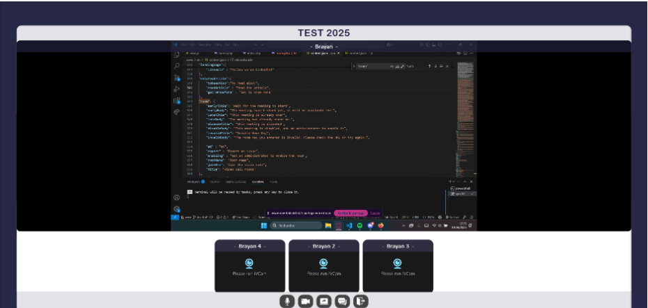
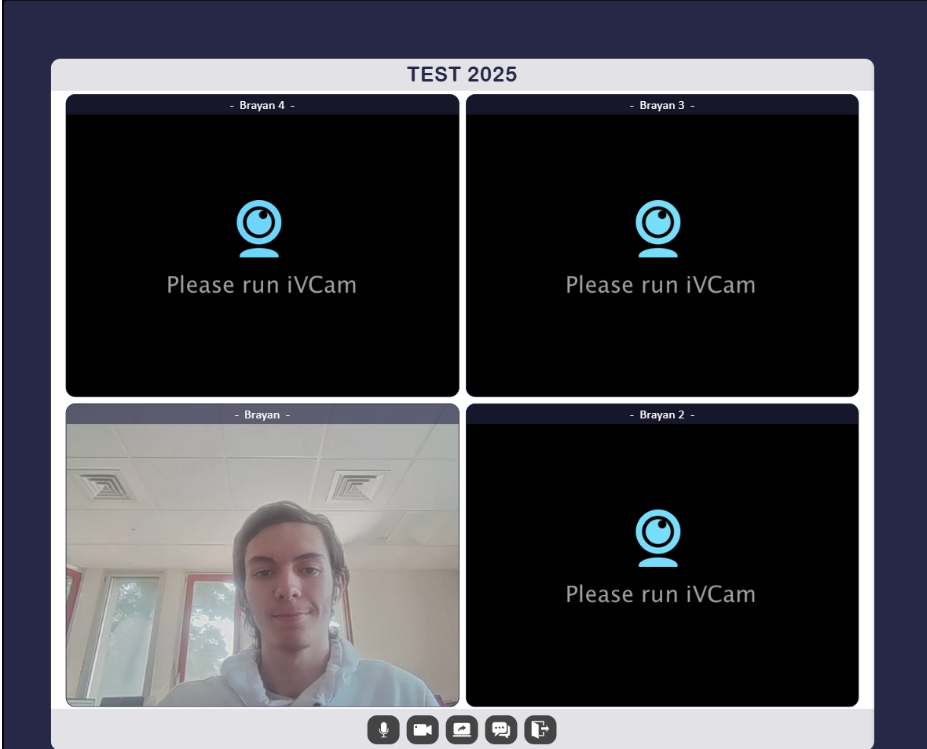

Stage Ubilink
Développeur Web · Meylan (Isère) · 10 semaines · 2025
L'entreprise
Ubilink est une start-up basée à Meylan (Isère), spécialisée dans le développement d'applications web autour de la réalité virtuelle. Elle s'adresse à des secteurs comme l'hôtellerie, l'événementiel et l'immobilier, en proposant iBIM — un outil permettant de créer des univers virtuels 3D interactifs accessibles depuis n'importe quel appareil connecté.
Mission 1 — Module Inventory
Développement d'un module de gestion d'inventaire dans le back-office d'iBIM, permettant aux administrateurs de visualiser et modifier les objets 3D disponibles dans chaque salle virtuelle.
- Conception de la page de liste des objets de l'inventaire.
- Intégration avec la base de données via des requêtes AJAX sécurisées.
- Gestion de données JSON imbriquées et multilangue.
- Modifications visibles en temps réel dans l'application iBIM.
Mission 2 — Outil de visioconférence
Développement from scratch d'un système de visioconférence interne à Ubilink, basé sur WebRTC et les sockets, permettant à l'équipe d'organiser ses rendez-vous clients sans passer par des plateformes externes comme Teams ou Whereby.
- Connexion peer-to-peer automatisée via WebRTC et sockets.
- Système sécurisé de rooms avec clé unique de 32 caractères et plage horaire.
- Page de paramétrage : choix caméra, micro, sortie audio et aperçu avant entrée.
- Mosaïque dynamique : algorithme de disposition optimale selon le nombre de participants et la taille de l'écran.
- Fonctionnalités complètes : partage d'écran, plein écran, mute micro/caméra, chat écrit.
- Mise en production et tests en conditions réelles pour un rendez-vous client.


Bilan personnel
Ce stage m'a permis de développer mon autonomie en travaillant sur des projets directement utilisés en production, avec de vrais délais et de vrais enjeux. J'ai découvert et maîtrisé des technologies que je ne connaissais pas — WebRTC, sockets, peer-to-peer — et j'ai pu voir l'impact direct de mon travail lors d'un rendez-vous client réel.
Au-delà du technique, c'est l'expérience du travail en équipe dans une structure agile et bienveillante qui m'a le plus apporté, en me donnant confiance dans ma capacité à m'adapter et à monter en compétences rapidement.